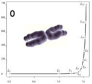
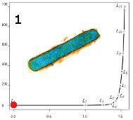
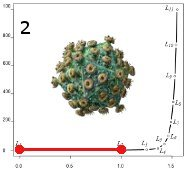
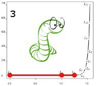
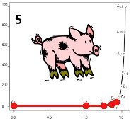
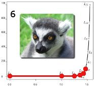
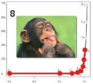
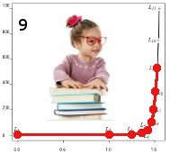
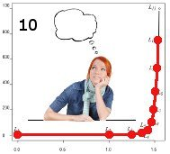
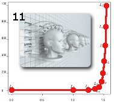

13 different levels of functional consciousness are defined in ConsScale.
See below for a description of the main features of each level.
Each level is characterized by architectural and behavioral criteria.
See the ConsScale Level Summary for a schematic description of the levels.
(Table 1 covers architectural features and Table 2 behavioral profiles).
See Video 1 for a brief descriptions of the levels.
ConsScale Levels of Consciousness
Level -1. Disembodied
This is the initial reference level which corresponds to very simple implementations lacking defined boundaries. In other words, implementations that cannot be regarded as agents, and can be easily confounded with the rest of the environment. These entities could be regarded as "proto-agents". This level serves as an initial reference that remarks the importance of a body as a requirement for defining a situated agent. There are no characteristic cognitive skills defined for this level. A biological analogy for this level could be an amino acid as part of a protein.
The rest of the scale comprises a set of twelve ranks, where lower levels are subsumed by higher ones. Therefore, each stage of the incremental development of an artificial agent could be qualitatively identified by a concrete level.
Level 0. Isolated

Although there is an obvious distinction between the body of the implementation and environment, there is a total lack of autonomous processing and no sensorimotor machinery is present. Level 0 is also a conceptual reference which helps characterizing situatedness in terms of the relation with the environment. It represents an inert body lacking any functionality or interaction with the medium except the inevitable contact derived from the physical properties of its own inactive body. There are no characteristic cognitive skills defined at this stage. An isolated chromosome could be regarded as a valid biological analogy for this level.
Level 1. Decontrolled

This level refers to those implementations where sensors and actuators are present, but there is no working relation between them (either the sensorimotor devices are not functional for some reason or they are working but there is no functional relationship between S and A). As sensing and action are inexistent or unrelated, still no cognitive skills can be defined. Dead bacteria could be an exemplifying analogy from the biological world.
Level 2. Reactive

Both sensing and action machineries are functional and related by a predefined function. Fixed reactive responses are produced as an invariable function of the input acquired by senses. Primitive situatedness based on reflexes is the only characteristic cognitive skill of this level. A biological analogy for this level could be a virus.
Level 2 defines a classical reactive agent which lacks any explicit memory or learning capabilities. From level 2 onwards the agents make use of the environment as the means to close the feedback loop between action and perception. Hence, all agent types above level 1 can be regarded as situated agents. Although we are explicitly focusing on individual agent evaluation, it is important to note that additional learning or adaptation processes could exist at an evolutionary plane (assuming that agents are able to replicate, mutate, and evolve). For instance, although reactive rules are fixed for a level 2 individual, adaptation of reactive responses in a population of agents could take place over the generations. The characteristic behaviour of this level is the reflex, hence an agent able to autonomously react to given environmental situations is said to comply with level 2.
Level 3. Adaptive

At this level agent's action are a dynamic function of both memory and current information acquired by sensors. Characteristic cognitive skills are basic ability to learn new reflexes and the use of proprioceptive sensing for orientation and positioning behaviors. The earthworm could be an illustrative biological analogy for this level.
Level 3 can be identified as the simplest form of an adaptive agent. At this level, the agent's internal state is maintained by a memory system and sensorimotor coordination (R) is just a simple function of both perceived and remembered information. Proprioceptive sensing is present at this level; however, it is not producing any self-awareness. At this level, learning mechanisms are possible as new reflective behaviours can be acquired. When the response to a given environment state is not fixed, but it is a function of both the information acquired by S and agent's internal state (M), then the agent is said to comply with level 3 (note that some proprioceptive sensing mechanism is required to make agent's internal state available in R, so it can be an input of the sensorimotor coordination function). Level 3 can also be seen as an evolution of level 2 in which an autonomous capability for learning new reflexes has been acquired.
Level 4. Attentional
At this level agent's behavior is biased by attention. The attention mechanism selects specific contents out of the total repertory of contents available from sensors and memory. Selected contents are also evaluated positively or negatively, thus constituting the seed for emotions. The cognitive capability of level 4 agents permits the production of attack and escape behaviors. Fish could be a plausible biological analogy for this level.
Thanks to the attention mechanism explicit learning is directed toward selected objects or events. However, implicit learning mechanisms also exist, like the acquisition of reflective strategies which is also a characteristic of the former level. If the agent is able to direct attention to a selected subset of the environment state (Ei) while other environmental variables are also sensed but ignored in the explicit processing of R, and the selected perception is automatically evaluated in terms of agent's goals allowing subsequent responses to be adapted (emotions), then the agent is said to comply with level 4. Attentional agents are able to show specific attack or escape behaviours and trial and error learning. The ability to pay attention toward specific objects or events gives place to the formation of directed behaviour, i.e. agent can develop behaviours clearly related to specific targets, like following or running away. Additionally, level 4 agents can have primitive emotion mechanisms in the sense that the objects to which attention is paid are elementally evaluated as positive or negative. A positive emotion triggers decrease of distance behaviour or bonding to selected object, while negative emotion triggers increase of distance and reinforcement of boundaries toward selected object. Additionally, a new relation between emotions and memory appears at this level: as demonstrated in biological organisms, emotions are deeply involved in the selection of what needs to be stored in memory. Basically, level 4 can be seen as an evolution of level 3 in which the attention capability has been acquired.
Level 5. Executive

Agents at this level are able to interleave multiple goals as different working sets are represented in memory. Characteristic cognitive skills are set shifting and basic emotional learning. Multiple goals can be achieved and most emotionally rewarding tasks are assigned more time and effort. Quadruped mammals are a suitable biological analogy for this level.
A level 5 agent includes a more complex reasoning and internal state representation, which provides set shifting capabilities. The achievement of multiple goals is performed thanks to a higher coordination mechanism that shifts attention from one task to another. The agent is also endowed with a mechanism to evaluate the performance in achieving the pending goals. This mechanism is the self-status assessment, better known as emotions. The presence of emotions associated to objects, events, and now also to agent's own actions permits the development of reinforcement learning mechanisms. If an agent can be successfully classified as Attentional in terms of ConsScale and it also exhibits set shifting and basic emotional learning capabilities, then it can be regarded as Executive. In addition to advanced planning, emotional learning is another characteristic that can be observed at this level, as the most emotionally rewarding tasks are assigned more time and effort. In sum, level 5 can also be seen as an evolution of level 4 in which goal seeking and set shifting capabilities have been acquired.
Level 6. Emotional

This level is characterized by the support of Theory of Mind (ToM) stage 1, "I know". ToM is the ability to attribute mental states to oneself and others. From a human developmental standpoint, Lewis suggests four stages in the acquisition of ToM: (1) "I know", (2) "I know I know", (3) "I know you know", and finally (4) "I know you know I know". At level 6, feelings appear as representations of organism changes due to an emotion. As the effects of emotions in the organism are mapped, a sense of "I know" appears in the agent. Characteristic cognitive skill of level 6 is the ability to develop complex emotional learning.
The agent generalizes the learned lessons to its general behavior, furthermore, emotions are also assigned to the self and self-status monitoring, producing a self-evaluation that gives place to a sense of "I know". Monkeys are the biological analogy of level 6.
Level 6 is the first level in which an agent can be to certain extend regarded as conscious (but not self-conscious). The main characteristic of this level is the support for ToM stage 1, "I know". Complex emotions are built as a combination of basic emotions and they are not only used to evaluate external objects but to assess the internal agent status, i.e. background emotions are present. Feelings appear as representations of organism changes due to an emotion (Damasio 1999). As the effects of emotions in the organism are mapped, a sense of "I know" appears in the agent. By basic emotional learning we mean that the agent is able to learn basic rules from one task and adapt its behaviour consequently in the performance of that particular task. In contrast, level 6 agents are characterized by complex emotions and complex emotional learning. This means that the agent generalizes the learned lessons to its general behaviour, furthermore, emotions are also assigned to the self and self-status monitoring and evaluation gives place to a sense of "I know" (support for ToM stage 1). Even though a representation of the self is considered as an input of the sensorimotor coordination function, this still is an implicit symbol.
Level 7. Self-Conscious
Self-consciousness is acquired as ToM stage 2, "I know I know", is supported by the agent. The presence of a model of self in the agent makes self-recognition possible. Furthermore, learning mechanisms can operate now in the realm of anticipated future. The agent can plan about itself (as the proper agent is part of the plan), and later learn if the plan was efficient or not. Learning to use tools is a cognitive skill featured in this level, since being a character in the plan is a key factor for learning tool usage. 18 month old human babies are the biologic analogy for level 7.
Level 7 corresponds to the emergence of self-consciousness. At this level the agent is able to develop higher order thoughts, i.e. thoughts about thoughts, and more specifically thoughts about itself. Consequently it presents support for ToM stage 2, "I know I know". This requires the presence of a model of self in the agent, which in turns permits advance planning as the proper agent is part of the plan. Therefore, learning mechanisms can operate now in the realm of anticipated future. The agent can plan about itself, and later learn if the plan was efficient or not. Being a character in the plan is also a key factor for learning to use tools. Level 7 is characterized by an explicit symbol for the self, which enables self-recognition. The reference behaviour test for this level would be the mirror test, which although originally applied to primates, has also been adapted to other mammals and even artificial agents. Planning capabilities are extended as the self is integrated both in the current state representation and future state estimation. Behaviour at this level is also illustrated by the ability to use tools.
Level 8. Empathic

Intersubjectivity is the main characteristic of this level, where the agent is endowed with an enhanced internal model which includes the self but also includes the ability to model others as selves. The support of ToM stage 3, "I know you know" allows social behaviors. Chimpanzees are an illustrative biological analogy for this level.
In this level the internal representation of the agent is enriched by inter-subjectivity. In addition to the model of the self, others are also seen as selves; hence, they are consequently assigned a model of subjectivity. This is the seed for a complex social interaction. At this level, the model of the self is enriched and the agent is also able to represent a model of self for others. This capability in addition to the ability to hold a precise and updated map of body schema, i.e. body shape and posture (which is acquired in level 6), is necessary for the learning of tool usage and for the making of new tools. ConsScale level 8 is achieved by an agent when it maintains a model of others, and therefore it collaborates accordingly with other agents in the pursuit of a common goal. In fact, the need for socially aware plans in BDI agents has been considered some time ago.
Level 9. Social

At this level, the internal model of other selves is enhanced with a full support of ToM, "I know you know I know". This means that characteristic behavior of this level is defined by sophisticated Machiavellian strategies (or social intelligence) involving social behaviors like lying, cunning, and leadership. Also, accurate report and linguistic capabilities are the cognitive features of level 9. Agents at this level are able to develop a culture. 4 year old humans are the biological analogy for this level.
ToM is fully supported at level 9. In this case, agents are strongly influenced by the social environment and culture development provides new learning possibilities. In level 9, the internal model of other selves is enhanced with a full support of ToM. This means that characteristic behaviour of this level is defined by sophisticated Machiavellian strategies. In other words, an agent A could be aware that another agent B could be aware of A's beliefs, intentions, and desires. Advanced communication skills are the characterization of this level behaviour, where, for the first time, an agent would be able to purposely tell lies. There exist mathematical models of the dynamics of Machiavellian intelligence that could be potentially used to test these sorts of behaviours with artificial agents.
Level 10. Human-Like

As the name of this level suggests, the corresponding biological analogy is the adult human. The formation of a complex culture and the capability of accurate verbal report are features of this level. This also implies the usage of external complex tools for learning. Fluidity between social and technical intelligence permits the extension of knowledge using external media (like written communication) and technological advances are also possible. Level 10 agents are able to profoundly modify their environment.
Level 10 represents the sort of agents endowed with the same level of consciousness as a healthy adult human. Therefore, the formation of a complex culture is a feature of this level. This implies the usage of external complex tools for learning. While the obvious test for level 10 is the Turing test (or related variants), also accurate communications skills (language) and the creation of a culture would be a clear feature of level 10. Other key characteristics are that level 10 agents are able to profoundly modify their environment and society.
Level 11. Super-Conscious

This last level is characterized by the ability to synchronize and coordinate several streams of consciousness in one physical self. There are no exemplifying examples in the biological world that could be used as a valid analogy for level 11.
level 11 or Super-Conscious, refers to a kind of agent able to internally manage several streams of consciousness, while coordinating a single body and physical attention. A mechanism for coordination between the streams and synchronized access to physical resources would be required at this level.
 This is the initial reference level which corresponds to very simple implementations lacking defined boundaries. In other words, implementations that cannot be regarded as agents, and can be easily confounded with the rest of the environment. These entities could be regarded as "proto-agents". This level serves as an initial reference that remarks the importance of a body as a requirement for defining a situated agent. There are no characteristic cognitive skills defined for this level. A biological analogy for this level could be an amino acid as part of a protein.
This is the initial reference level which corresponds to very simple implementations lacking defined boundaries. In other words, implementations that cannot be regarded as agents, and can be easily confounded with the rest of the environment. These entities could be regarded as "proto-agents". This level serves as an initial reference that remarks the importance of a body as a requirement for defining a situated agent. There are no characteristic cognitive skills defined for this level. A biological analogy for this level could be an amino acid as part of a protein.
 At this level agent's behavior is biased by attention. The attention mechanism selects specific contents out of the total repertory of contents available from sensors and memory. Selected contents are also evaluated positively or negatively, thus constituting the seed for emotions. The cognitive capability of level 4 agents permits the production of attack and escape behaviors. Fish could be a plausible biological analogy for this level.
At this level agent's behavior is biased by attention. The attention mechanism selects specific contents out of the total repertory of contents available from sensors and memory. Selected contents are also evaluated positively or negatively, thus constituting the seed for emotions. The cognitive capability of level 4 agents permits the production of attack and escape behaviors. Fish could be a plausible biological analogy for this level.
 Self-consciousness is acquired as ToM stage 2, "I know I know", is supported by the agent. The presence of a model of self in the agent makes self-recognition possible. Furthermore, learning mechanisms can operate now in the realm of anticipated future. The agent can plan about itself (as the proper agent is part of the plan), and later learn if the plan was efficient or not. Learning to use tools is a cognitive skill featured in this level, since being a character in the plan is a key factor for learning tool usage. 18 month old human babies are the biologic analogy for level 7.
Self-consciousness is acquired as ToM stage 2, "I know I know", is supported by the agent. The presence of a model of self in the agent makes self-recognition possible. Furthermore, learning mechanisms can operate now in the realm of anticipated future. The agent can plan about itself (as the proper agent is part of the plan), and later learn if the plan was efficient or not. Learning to use tools is a cognitive skill featured in this level, since being a character in the plan is a key factor for learning tool usage. 18 month old human babies are the biologic analogy for level 7.